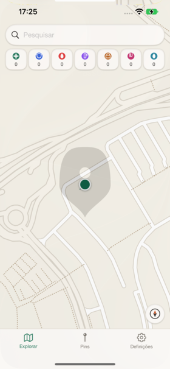

Water
Drinking fountains, springs, fords, weirs and access points.
Open source · Free · Offline
Emergency services, water and supplies remain on the phone, with a route to reach them.

Why it exists
Search and cloud directions go with it. Blackout Maps is the navigation tool that remains on the phone. The first things you need are physical: a hospital, a fire station, drinking water, food. The phone should still show where they are, and a way to reach them.
What you find
Drinking fountains, springs, fords, weirs and access points.
Medical care, from hospitals to the smaller places in the data.
Stations and posts.
Fire stations.
Places to get fuel.
Shops for food and supplies.
Places to eat.
A wide view shows one or two places from each category that is actually in sight. Zooming in shows more. In a dense area, every place appears only when the zoom is already close. An empty category stays empty.
How you get there
On foot
By bicycle
By car
The roads come with the app. You pick a mode and follow the route to the place you chose.
What the app does
You can save a place, give it a name and remove it later.
During navigation, a map button opens the full list of directions from the start of the trip to the destination.
The app does not use GPS. You set your position on the map, and the phone’s motion sensors keep an approximate position on the device. You can turn the sensors off and change the step length.
Places, water, addresses and geography download by country or state. Portugal downloads on first launch. Any other place is added from Settings, where it appears with its flag and name.
Open source
There is no login and no charge. The app collects no data and does not use GPS. Sensor readings stay on the phone. The code is public, and updated maps of services are welcome.
PayPal is the direct way. A crypto wallet is the other way.
paypal.me/YOUR-PAYPAL-NAMEReplace YOUR-PAYPAL-NAME with the real PayPal.me name.
YOUR-WALLET-ADDRESS
Replace YOUR-WALLET-ADDRESS with the real wallet address.
Download
Neither app is in a store yet.
iOSComing
AndroidComing